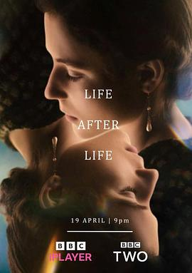

生命不息 / Life After Life
又名：生生世世
童年时死亡是阴影，成人后死亡是解脱。当一遍一遍重来，死亡只是哲学意义上的死亡后，依然无法解决所有问题获得“好结局”，但还是要“Amor Fati” 爱你的命运
作品信息
| 导演 | 约翰·克劳利 |
| 编剧 | 巴什·多伦 / 凯特·阿特金森 |
| 主演 | 托马辛·麦肯齐 / 茜安·克利福德 / 莱丝利·曼维尔 / 詹姆斯·麦卡德尔 / 杰西卡·布朗·芬德利 / 伊斯拉·约翰斯顿 / 伊丽莎·赖利 / 杰西卡·海因斯 / 肖恩·德兰尼 / 哈里·米歇尔 / 帕齐·费伦 / 劳利·基纳斯顿 / 罗恩·库克 / 约翰·霍奇金森 / 玛丽亚·莱尔德 / 乔舒亚·希尔 / 路易斯·霍夫曼 / 艾维·坦普尔顿 / 萨迪·拜伦 / 杰克·福赛思-诺布尔 / 安德斯·海沃德 / 马修·科特尔 / 奥斯卡·埃斯金纳齐 / 詹姆斯·乔治·威廉斯 / 萨乌拉·莱特福德-莱昂 / 麦瑞·盖尔 / 海伦娜·奥尔布赖特 / 古斯·特纳 / 扎卡里·纳赫巴-塞克尔 / 艾玛·比蒂 / 马修·皮金 / 南希·伦博尔 / 奈莉·伦博尔 / 玛蒂尔达·斯塔福德 / 帕米拉·斯塔福德 / 阿尔菲·哈里森 / 凯尔西·巴拉 / 瑞凡·卡德尔 / 扎拉·戈姆雷 / 拉尔夫·戴维斯 |
| 类型 | 剧情 |
| 制片国家/地区 | 英国 |
| 语言 | 英语 |
| 首播 | 2022-04-19(英国) |
| 集数 | 4 |
| 单集片长 | 60分钟 |
| IMDb | tt13872480 |
最后一次看到是 2026-08-12T21:11:06+08:00 · 豆瓣原页